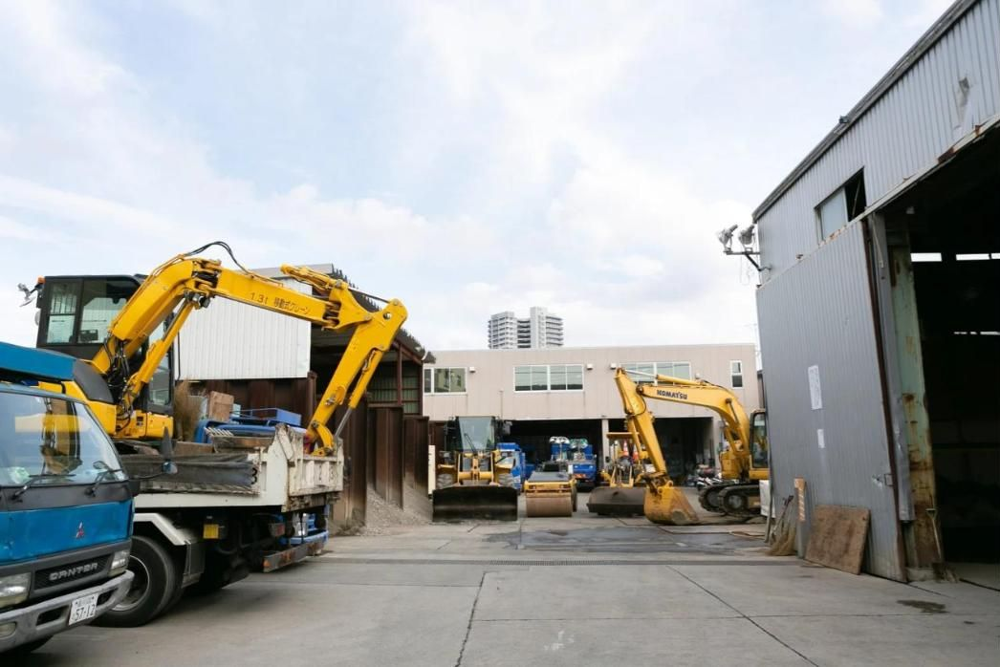
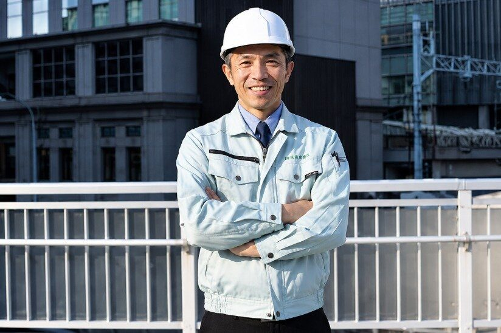
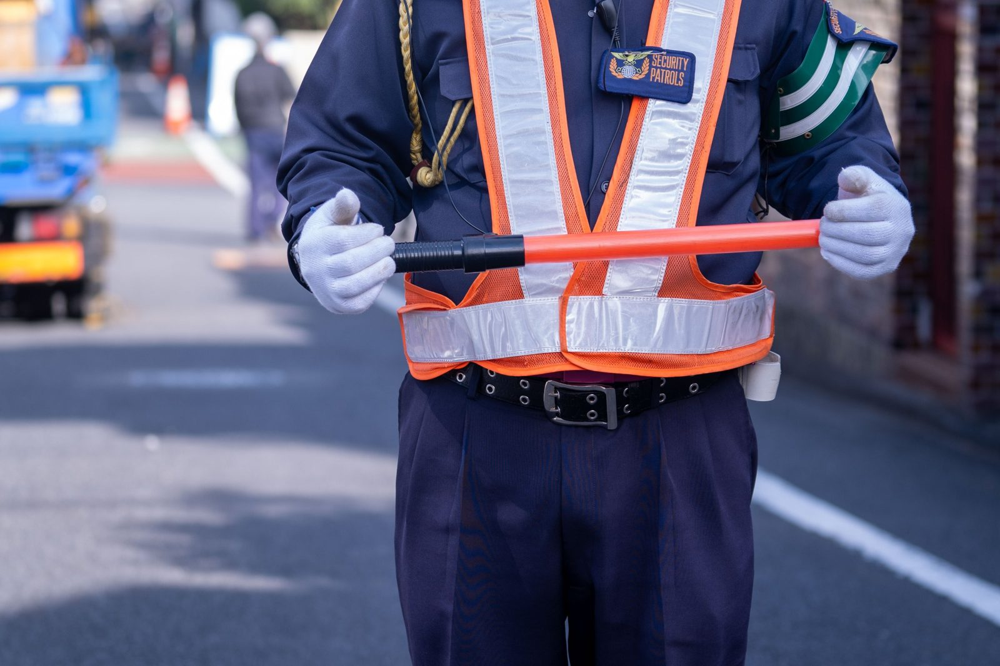
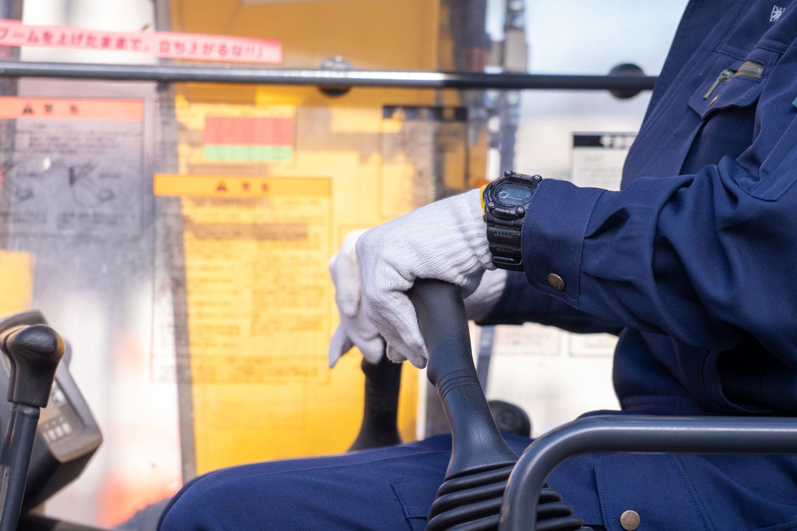

復旧舗装
ガス管取替工事の後に、道路を使える状態へ整える。
THE NEXT 50 YEARS 久留米興業の未来
この街に道路があり、水道があり、暮らしが続く限り、それらを支える仕事は必要です。久留米興業が次の世代につないでいきたいものを、お伝えします。


本社の敷地
VISION 目指す姿
久留米興業は、先代から受け継がれ、社員や取引先、地域の方々の協力によって続いてきました。川島代表が目指しているのは、事業を次の世代へつなぐことです。しかし、道路を直す仕事があっても、それを担う人がいなければ会社は続きません。そこで必要になるのが、現場で培った技術や経験を受け継ぐ人、そして、その人たちが長く働ける環境です。
これまでのやり方をすべて変えるのではなく、守るべきことは残し、時代に合わない部分は見直していく。そうした積み重ねによって、次の世代も必要とされる会社でありたいと考えています。
仕事を残すことと、働く人を育てることは、別々ではありません。
ESSENTIAL WORK 続いていく仕事
道路は、毎日の通勤や通学、物流を支えています。地下のガス管や水道管の工事を終えた後、道路を安全に使える状態へ戻す。久留米興業は、その仕事に携わってきました。

ガス管取替工事の後に、道路を使える状態へ整える。
水道管の布設・布設替など、供給の基盤に関わる。
道路の維持・改良など、地域の土木工事。
下水道整備など、生活の基盤に関わる。
KEEP / CHANGE 守るもの・変えるもの

一つひとつの現場に責任を持つこと。取引先や協力会社、地域の方々との関係。現場の経験を、次の人へ渡していくこと。
一人に負担が集中する働き方。見て覚えるだけに頼る教育。残業や安全、休憩の慣習。今の現場に合った方法を考え直していきます。
「変えていきたいもの」には、すでに取り組んでいることと、これからの課題の両方が含まれます。
WORKSTYLE 取り組みの現在地
きっかけは、川島代表自身が休みの少ない働き方を経験し、労務管理を学び直したこと。少しずつ整えてきましたが、現場にはまだ負担の大きい日もあります。

36協定を含めて残業時間を管理し、定時を意識した運用を進めてきました。
現場の人数を厚くすることで、一人ひとりへの負荷を軽くしようとしてきました。
今は先輩が日々の現場と並行して教えています。教える側の余裕や仕組みが十分でないことも認識し、経験を次世代へつなぐ方法を考えていきます。
現場職の社員からは、休憩に余裕を感じられない日があるという声もあります。現場の声を確かめながら、改善を続けることが大切です。
PEOPLE 受け継ぐ人
営業として入社し、資格を取って現場代理人を目指す人。現場職として作業を覚え、班長を支える人。経験のある社員と新しく入る人が、日々の仕事で学び合える環境を整えていきます。

現場・会社・仕事の流れを理解する
小さな仕事から担当範囲を広げる
周囲の動きを見ながら連携・調整する
経験を後輩や次世代へつなぐ
4つの段階は考え方を示した図で、時期や昇格を約束するものではありません。
VOICES 現場からの声

広告業界から転職した今井さんは、未経験者として現場で学び直し、仕事の仕方を変えてきた人です。将来の専門性や、自分に任される役割を重視して転職した経験から、久留米興業で働くことを考えています。
今井さんの全文記事 ↗（外部サイトが開きます）現場で働く二人は、仕事の厳しさと、先輩や仲間との連携を率直に語っています。1日を余裕をもって終えたい、少しずつ仕事を覚えてほしいという実感は、これから働く環境を考えるうえで大切な声です。
働くスタッフの話を読む →COMMUNITY 地域とのつながり
工事は、周辺に暮らす方々の理解があってこそ進められます。地域の行事への協賛や、余ったブロックを希望する方に渡すことなど、顔の見える関係を大切にしてきました。

TRUST 信頼
技術と信頼を積み重ね、取引先・協力会社・社員が無理なく仕事を続けられる関係を築く。それが、これからの目標です。

NEXT
誰もが最初から明確な目標を持っているわけではありません。どのような仕事をし、誰と働き、何を覚えていけるのか。具体的な仕事内容や社員の声を知ったうえで、自分に合うか考えてみてください。